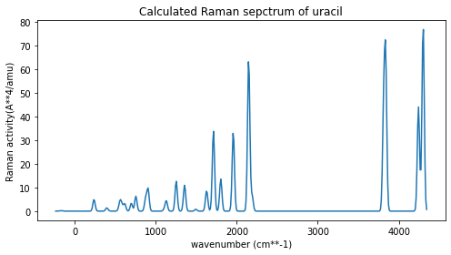

Raman spectroscopy¶
The Raman scattering process involves the inelasic scattering of light in the visible range, leaving the molecule in a different vibrational state. The associated scattering amplitude is related to the transition polarizability tensor (\(\boldsymbol{\alpha}\)) expressed uing the Kramers-Heisenberg-Dirac equation [NRS18]:
where \(\alpha_{ab}\) is a tensor element (with \(a,b=x,y,\) or \(z\)), \(|0\rangle\) and \(|f\rangle\) are the ground state, respectively excited vibrational state, \(\hat{\mu}\) is the dipole operator, \(\omega\) and \(\omega'\) are the incoming, respectively, outgoing photon angular frequecy, the sumation is over all intermidite excited states \(|n \rangle\), \(\gamma_n\) is the inverse lifetime parameter of state \(|n\rangle\), and \(\omega_{n0}\) is the angular frequency associated to the energy difference between the vibrational excited state \(|n\rangle\) and the ground state.
In the case of normal Raman scattering described using the harmonic approximation for molecular vibrations, the transition polarizability associated to normal mode \(k\) (\(\alpha^k_{ab}\)) becomes [NRS18]:
Here, \(\omega_k\) is the angular frequency corresponding to the normal mode described by the \(Q_k\) normal coordiante and \(\alpha^\mathrm{e}_{ab}\) is the \(ab\) component of the electronic polarizability tensor.
Raman scattering amplitudes thus depend on the derivative of the electronic polarizability with respect to the normal coordinate, so only modes along which the polarizability changes will be Raman active.
For randomly oriented molecules and linearly polarized incident light, the Raman differenial cross-section is calculated in practice as [Gut19]:
where \(\omega_L\) is …, \(\omega_S\) is the angular frequency of the scattered light, \(\omega_k\) is the angular frequency of vibrational mode \(k\), and \(S_k\) is the Raman activity of the mode, defined as [Gut19]:
Here, \(\bar{\alpha}^2_k\) and \(\bar{\gamma}^2_k\) are Raman rotational invariants [Gut19]:
Raman spectrum of uracil and thymine (initially cafestol and kahweol)¶
Cafestol and kahweol are two molecules with very similr molecular structures contained in coffee beans. Cafestol is contained in Robusta coffee, while Kahweol is contained in the Arabica type and has a distinctive Raman peak. This peak allows to identify Arabica coffee beans by Raman spectroscopy. Here, we will calculate the Raman spectrum of cafestol and kahweol and identify the peak which distinguishes between them, as well as the associated vibrational normal mode.
Uracil and thymine differ by a methyl group which has signatures in the vibrational spectrum
# Import section
import veloxchem as vlx
import py3Dmol as p3d
import sys
basis_set_label = 'sto-3g' # bigger basis set? / Already too big to import eri derivs for these molecules; smaller systems here??
To computea meaningful Raman spectrum, the molecular geometries must be optimized at the same level of theory and using the same basis set. See the notebook on ground state geometry optimization here.
# Prepare molecules and basis sets:
uracil_xyz = open("uracil_mp2_opt.xyz", "r").read() # read optimized geometry from file
thymine_xyz = open("thymine_mp2_opt.xyz", "r").read() # read optimized geometry from file
uracil = vlx.Molecule.from_xyz_string(uracil_xyz)
uracil_basis = vlx.MolecularBasis.read(uracil, basis_set_label)
thymine = vlx.Molecule.from_xyz_string(thymine_xyz)
thymine_basis = vlx.MolecularBasis.read(thymine, basis_set_label)
print("\n(a) Uracil MP2 optimized geometry (b) Thymine MP2 optimized geometry")
viewer = p3d.view(viewergrid=(1,2),width=500,height=250,linked=Falseandandandand)
viewer.addModel(uracil_xyz, 'xyz', viewer=(0,0))
viewer.addModel(thymine_xyz, 'xyz', viewer=(0,1))
viewer.setStyle({'stick': {}})
viewer.show()
(a) Uracil MP2 optimized geometry (b) Thymine MP2 optimized geometry
You appear to be running in JupyterLab (or JavaScript failed to load for some other reason). You need to install the 3dmol extension:
jupyter labextension install jupyterlab_3dmol
To compute the Raman spectrum, we need the vibrational frequencies and Raman intensities. The frequencies are eigenvalues of the molecular Hessian, while the Raman intensities are proportional to the gradient of the polarizability. The first step is to determine the Hessian matrix.
# Settings:
scf_settings = {'conv_thresh': 1.0e-5}
method_settings = {} # HF; use 'xcfun': 'b3lyp', 'grid_level': 4, etc. for a DFT calculation
# Numerical Hessian, based on the analytical gradient (or use numerical??)
hessian_settings = {'numerical': 'yes', 'do_raman': 'yes', 'print_depolarization_ratio':'yes',
'numerical_grad': 'no', 'do_print_hessian': 'no', 'do_four_point': 'no'}
# We first need to run an SCF calculation:
scfdrv = vlx.ScfRestrictedDriver()
scfdrv.update_settings(scf_settings, method_settings)
scfdrv.compute(uracil, uracil_basis)
Self Consistent Field Driver Setup
====================================
Wave Function Model : Spin-Restricted Hartree-Fock
Initial Guess Model : Superposition of Atomic Densities
Convergence Accelerator : Two Level Direct Inversion of Iterative Subspace
Max. Number of Iterations : 50
Max. Number of Error Vectors : 10
Convergence Threshold : 1.0e-05
ERI Screening Scheme : Cauchy Schwarz + Density
ERI Screening Mode : Dynamic
ERI Screening Threshold : 1.0e-12
Linear Dependence Threshold : 1.0e-06
* Info * Nuclear repulsion energy: 358.3227306362 a.u.
* Info * Overlap matrix computed in 0.00 sec.
* Info * Kinetic energy matrix computed in 0.00 sec.
* Info * Nuclear potential matrix computed in 0.01 sec.
* Info * Orthogonalization matrix computed in 0.00 sec.
* Info * SAD initial guess computed in 0.00 sec.
* Info * Starting Reduced Basis SCF calculation...
* Info * ...done. SCF energy in reduced basis set: -407.075250226064 a.u. Time: 1.33 sec.
* Info * Overlap matrix computed in 0.00 sec.
* Info * Kinetic energy matrix computed in 0.00 sec.
* Info * Nuclear potential matrix computed in 0.03 sec.
* Info * Orthogonalization matrix computed in 0.00 sec.
Iter. | Hartree-Fock Energy | Energy Change | Gradient Norm | Max. Gradient | Density Change
--------------------------------------------------------------------------------------------
1 -407.075330408785 0.0000000000 0.00304876 0.00026555 0.00000000
2 -407.075332217070 -0.0000018083 0.00146988 0.00015903 0.00170335
3 -407.075332915537 -0.0000006985 0.00034515 0.00004183 0.00187425
4 -407.075332934708 -0.0000000192 0.00011819 0.00000784 0.00019052
5 -407.075332937819 -0.0000000031 0.00004744 0.00000465 0.00012024
6 -407.075332938167 -0.0000000003 0.00000529 0.00000041 0.00002733
*** SCF converged in 6 iterations. Time: 2.02 sec.
Spin-Restricted Hartree-Fock:
-----------------------------
Total Energy : -407.0753329382 a.u.
Electronic Energy : -765.3980635744 a.u.
Nuclear Repulsion Energy : 358.3227306362 a.u.
------------------------------------
Gradient Norm : 0.0000052903 a.u.
Ground State Information
------------------------
Charge of Molecule : 0.0
Multiplicity (2S+1) : 1.0
Magnetic Quantum Number (M_S) : 0.0
Spin Restricted Orbitals
------------------------
Molecular Orbital No. 25:
--------------------------
Occupation: 2.0 Energy: -0.44715 a.u.
( 2 C 1p+1: 0.33) ( 3 C 1p+1: 0.44) ( 4 N 1p+1: 0.39)
( 5 C 1p+1: -0.33) ( 6 N 1p+1: -0.34) ( 8 O 1p+1: -0.37)
Molecular Orbital No. 26:
--------------------------
Occupation: 2.0 Energy: -0.36029 a.u.
( 2 C 1p-1: 0.17) ( 4 N 2s : 0.15) ( 4 N 1p-1: 0.26)
( 6 N 2s : -0.27) ( 6 N 1p-1: 0.16) ( 7 O 1p-1: 0.40)
( 8 O 1p-1: 0.69) ( 8 O 1p0 : 0.35)
Molecular Orbital No. 27:
--------------------------
Occupation: 2.0 Energy: -0.32787 a.u.
( 2 C 2s : -0.15) ( 2 C 1p-1: -0.22) ( 6 N 1p0 : 0.31)
( 7 O 1p-1: -0.65) ( 7 O 1p0 : 0.44) ( 8 O 1p-1: 0.36)
( 8 O 1p0 : 0.30)
Molecular Orbital No. 28:
--------------------------
Occupation: 2.0 Energy: -0.30453 a.u.
( 1 C 1p+1: 0.17) ( 5 C 1p+1: 0.15) ( 6 N 1p+1: -0.69)
( 7 O 1p+1: 0.46) ( 8 O 1p+1: 0.53)
Molecular Orbital No. 29:
--------------------------
Occupation: 2.0 Energy: -0.26505 a.u.
( 2 C 1p+1: -0.57) ( 3 C 1p+1: -0.35) ( 4 N 1p+1: 0.57)
( 7 O 1p+1: 0.37) ( 8 O 1p+1: -0.30)
Molecular Orbital No. 30:
--------------------------
Occupation: 0.0 Energy: 0.23410 a.u.
( 1 C 1p+1: -0.43) ( 2 C 1p+1: -0.46) ( 3 C 1p+1: 0.72)
( 4 N 1p+1: -0.28) ( 6 N 1p+1: 0.26) ( 7 O 1p+1: 0.46)
Molecular Orbital No. 31:
--------------------------
Occupation: 0.0 Energy: 0.31094 a.u.
( 1 C 1p+1: 0.40) ( 2 C 1p+1: -0.31) ( 4 N 1p+1: 0.26)
( 5 C 1p+1: -0.75) ( 6 N 1p+1: 0.16) ( 7 O 1p+1: -0.33)
( 8 O 1p+1: 0.60)
Molecular Orbital No. 32:
--------------------------
Occupation: 0.0 Energy: 0.44723 a.u.
( 1 C 1p+1: 0.65) ( 2 C 1p+1: -0.56) ( 3 C 1p+1: 0.45)
( 4 N 1p+1: -0.31) ( 5 C 1p+1: 0.45) ( 6 N 1p+1: -0.37)
( 7 O 1p+1: -0.41) ( 8 O 1p+1: -0.28)
Molecular Orbital No. 33:
--------------------------
Occupation: 0.0 Energy: 0.53637 a.u.
( 1 C 2s : 0.17) ( 1 C 1p-1: -0.19) ( 2 C 2s : 0.19)
( 2 C 1p-1: -0.29) ( 2 C 1p0 : 0.15) ( 3 C 1p-1: -0.52)
( 3 C 1p0 : 0.22) ( 4 N 2s : 0.93) ( 4 N 1p-1: -0.22)
( 4 N 1p0 : -0.22) ( 5 C 2s : -0.27) ( 5 C 1p0 : -0.16)
( 6 N 2s : 0.41) ( 9 H 1s : -0.48) ( 10 H 1s : -0.31)
( 11 H 1s : -0.84) ( 12 H 1s : -0.45)
Molecular Orbital No. 34:
--------------------------
Occupation: 0.0 Energy: 0.58703 a.u.
( 1 C 2s : 0.75) ( 1 C 1p0 : -0.39) ( 2 C 2s : -0.20)
( 2 C 1p-1: -0.35) ( 3 C 1p-1: -0.34) ( 4 N 1p-1: -0.29)
( 5 C 2s : 0.54) ( 5 C 1p0 : 0.35) ( 6 N 1s : 0.18)
( 6 N 2s : -1.20) ( 7 O 1p0 : 0.16) ( 8 O 1p0 : -0.15)
( 9 H 1s : -0.26) ( 10 H 1s : 0.72)
# Create a Hessian driver object, update settings, and compute
hessian_drv = vlx.scfhessiandriver.ScfHessianDriver(scfdrv)
hessian_drv.update_settings(method_settings, hessian_settings)
hessian_drv.compute(uracil, uracil_basis)
SCF Hessian Driver
====================
*** Time spent in Hessian calculation: 5117.63 sec ***
Note that the geometries were optimized at MP2/cc-pVTZ level, but the Hessian was caculated using HF/sto-3g, thus the two imagiary frequencies!
hessian_drv.vibrational_analysis(uracil, uracil_basis)
Vibrational Analysis
======================
Harmonic frequencies (in cm**-1), force constants (in mdyne/A), reduced masses (in amu),
IR intensities (in km/mol), Raman scattering activities (in A**4/amu),
parallel and perpendicular Raman scattering activities, depolarization ratios,
and Cartesian normal mode displacements.
Index: 1 2 3
Frequency: -186.11 -157.18 237.15
Force constant: 0.1270 0.0994 0.0456
Reduced mass: 6.2248 6.8303 1.3761
IR intensity: 25.9891 5.1533 88.9465
Raman activ.: 0.1587 0.1546 4.9529
Parallel Raman: 1.1562 1.1265 36.0888
Perp. Raman: 0.8672 0.8448 27.0666
Depol. ratio: 0.7500 0.7500 0.7500
Normal mode: X Y Z | X Y Z | X Y Z |
1 C -0.0271 0.0000 -0.0000 | -0.0022 -0.0000 -0.0000 | 0.0391 -0.0000 -0.0000 |
2 C 0.1268 -0.0000 0.0000 | -0.2273 -0.0000 0.0000 | 0.1089 -0.0000 0.0000 |
3 C 0.0847 -0.0000 0.0000 | -0.1232 0.0000 0.0000 | -0.0562 0.0000 -0.0000 |
4 N -0.3189 -0.0000 -0.0000 | 0.4095 0.0000 -0.0000 | 0.0423 0.0000 -0.0000 |
5 C -0.0416 -0.0000 -0.0000 | 0.0083 0.0000 0.0000 | 0.0185 0.0000 0.0000 |
6 N -0.3820 -0.0000 -0.0000 | -0.3504 0.0000 -0.0000 | -0.0816 -0.0000 0.0000 |
7 O 0.1293 0.0000 -0.0000 | 0.2943 -0.0000 -0.0000 | -0.0384 0.0000 -0.0000 |
8 O 0.3125 0.0000 0.0000 | -0.0283 -0.0000 0.0000 | 0.0581 -0.0000 0.0000 |
9 H 0.2782 -0.0000 0.0000 | -0.3032 -0.0000 -0.0000 | -0.1937 -0.0000 -0.0000 |
10 H -0.2091 -0.0000 -0.0000 | -0.3720 -0.0000 -0.0000 | -0.1138 -0.0000 0.0000 |
11 H 0.6049 -0.0000 -0.0000 | 0.2489 -0.0000 -0.0000 | -0.9438 0.0000 -0.0000 |
12 H 0.3538 0.0000 0.0000 | -0.5127 -0.0000 0.0000 | 0.1692 -0.0000 -0.0000 |
Index: 4 5 6
Frequency: 394.55 419.97 539.43
Force constant: 1.0460 0.2011 1.1030
Reduced mass: 11.4052 1.9347 6.4336
IR intensity: 21.3525 0.4337 11.6283
Raman activ.: 1.3590 0.1065 0.3231
Parallel Raman: 9.9048 0.7763 2.3604
Perp. Raman: 7.4239 0.5822 1.7592
Depol. ratio: 0.7495 0.7500 0.7453
Normal mode: X Y Z | X Y Z | X Y Z |
1 C 0.0000 0.0997 -0.0500 | -0.1578 -0.0000 0.0000 | -0.0000 0.2389 0.0569 |
2 C -0.0000 0.1182 -0.0627 | -0.1467 -0.0000 -0.0000 | -0.0000 0.2671 -0.1624 |
3 C 0.0000 0.0534 0.0098 | 0.1608 -0.0000 -0.0000 | 0.0000 0.0545 -0.0595 |
4 N -0.0000 0.1619 0.1228 | -0.0078 0.0000 -0.0000 | -0.0000 -0.2322 -0.2300 |
5 C -0.0000 0.1466 0.0203 | -0.0277 0.0000 0.0000 | -0.0000 -0.2285 -0.0231 |
6 N -0.0000 0.3448 -0.0052 | -0.0009 -0.0000 0.0000 | 0.0000 -0.0146 -0.0547 |
7 O 0.0000 -0.4123 0.2774 | 0.0889 0.0000 -0.0000 | 0.0000 -0.0734 0.2772 |
8 O 0.0000 -0.4041 -0.3222 | 0.0164 -0.0000 0.0000 | 0.0000 0.0409 0.1521 |
9 H 0.0000 0.0615 -0.0394 | 0.5324 -0.0000 -0.0000 | 0.0000 0.0186 0.2828 |
10 H 0.0000 0.3478 0.0162 | 0.5139 -0.0000 0.0000 | -0.0002 -0.0057 -0.5201 |
11 H -0.0000 0.2784 0.0651 | -0.6071 0.0000 -0.0000 | -0.0000 -0.2767 -0.2090 |
12 H 0.0000 0.2488 0.0168 | 0.0517 -0.0000 -0.0000 | -0.0000 0.2556 -0.1711 |
Index: 7 8 9
Frequency: 559.96 583.77 617.15
Force constant: 0.2221 1.2358 1.9307
Reduced mass: 1.2020 6.1547 8.6035
IR intensity: 134.4780 0.0649 1.3538
Raman activ.: 4.1416 2.2369 3.0619
Parallel Raman: 30.1775 17.7864 27.4736
Perp. Raman: 22.6331 10.7363 11.5698
Depol. ratio: 0.7500 0.6036 0.4211
Normal mode: X Y Z | X Y Z | X Y Z |
1 C 0.0403 0.0000 -0.0000 | 0.0000 -0.0200 0.2379 | 0.0000 0.0756 -0.2383 |
2 C 0.0564 0.0000 -0.0000 | 0.0000 -0.0527 -0.1458 | 0.0000 0.0123 -0.2499 |
3 C -0.0442 0.0000 0.0000 | -0.0000 0.0479 -0.2515 | -0.0000 -0.2954 -0.0895 |
4 N 0.0277 -0.0000 -0.0000 | 0.0000 0.0611 -0.1647 | 0.0000 -0.0531 0.0955 |
5 C 0.0024 -0.0000 -0.0000 | 0.0000 0.0238 0.1349 | 0.0000 -0.0423 0.3132 |
6 N -0.0789 -0.0000 -0.0000 | -0.0000 -0.0532 0.1862 | -0.0000 0.3262 0.0353 |
7 O -0.0385 -0.0000 0.0000 | -0.0000 0.2778 0.0771 | -0.0000 0.0127 -0.2227 |
8 O -0.0209 0.0000 0.0000 | -0.0000 -0.2798 -0.0357 | -0.0000 -0.1023 0.3281 |
9 H -0.1469 0.0000 0.0000 | -0.0000 0.0489 -0.2721 | -0.0000 -0.2991 -0.0819 |
10 H 0.9676 -0.0000 -0.0000 | 0.0001 -0.0526 0.2578 | 0.0001 0.3235 -0.0688 |
11 H 0.1620 -0.0000 0.0000 | 0.0000 0.3182 -0.2961 | 0.0000 0.3191 -0.0921 |
12 H 0.0155 0.0000 0.0000 | 0.0000 -0.3805 -0.3526 | -0.0000 0.2590 -0.0963 |
Index: 10 11 12
Frequency: 698.11 753.92 874.86
Force constant: 3.0238 1.3156 0.7013
Reduced mass: 10.5308 3.9284 1.5551
IR intensity: 53.2483 30.8002 30.3960
Raman activ.: 3.3536 6.3335 5.2763
Parallel Raman: 24.4354 46.1482 38.4451
Perp. Raman: 18.3265 34.6112 28.8338
Depol. ratio: 0.7500 0.7500 0.7500
Normal mode: X Y Z | X Y Z | X Y Z |
1 C -0.1740 0.0000 0.0000 | -0.3731 -0.0000 -0.0000 | -0.1430 0.0000 0.0000 |
2 C 0.0025 0.0000 -0.0000 | 0.1874 0.0000 0.0000 | 0.1264 -0.0000 -0.0000 |
3 C -0.0472 -0.0000 0.0000 | -0.2212 0.0000 0.0000 | 0.0996 -0.0000 -0.0000 |
4 N -0.1653 -0.0000 -0.0000 | 0.1065 0.0000 -0.0000 | -0.0315 -0.0000 0.0000 |
5 C 0.8261 -0.0000 -0.0000 | -0.0771 0.0000 0.0000 | 0.0035 0.0000 -0.0000 |
6 N -0.1330 -0.0000 -0.0000 | 0.0961 0.0000 -0.0000 | 0.0140 0.0000 -0.0000 |
7 O 0.0465 -0.0000 0.0000 | 0.0901 -0.0000 -0.0000 | 0.0381 0.0000 0.0000 |
8 O -0.2632 0.0000 0.0000 | 0.0246 -0.0000 -0.0000 | -0.0003 0.0000 -0.0000 |
9 H 0.0806 -0.0000 0.0000 | 0.0295 0.0000 0.0000 | -0.5664 -0.0000 -0.0000 |
10 H -0.1017 0.0000 -0.0000 | 0.0157 0.0000 0.0000 | 0.0259 0.0000 -0.0000 |
11 H -0.0213 -0.0000 0.0000 | 0.2676 0.0000 0.0000 | -0.0569 0.0000 0.0000 |
12 H 0.3889 0.0000 0.0000 | 0.8178 0.0000 0.0000 | -0.7914 -0.0000 0.0000 |
Index: 13 14 15
Frequency: 904.76 1103.93 1124.25
Force constant: 4.1043 3.9410 0.9407
Reduced mass: 8.5098 5.4887 1.2632
IR intensity: 2.8891 1.1351 2.3067
Raman activ.: 9.1652 0.6332 1.3946
Parallel Raman: 106.6049 6.7998 10.1613
Perp. Raman: 10.2622 1.2748 7.6210
Depol. ratio: 0.0963 0.1875 0.7500
Normal mode: X Y Z | X Y Z | X Y Z |
1 C -0.0000 -0.1201 -0.1587 | 0.0000 0.0761 -0.0130 | -0.0087 0.0000 0.0000 |
2 C 0.0000 0.2071 0.0590 | -0.0000 0.1702 -0.2436 | -0.0930 -0.0000 0.0000 |
3 C 0.0000 0.5168 0.0105 | 0.0000 -0.1316 -0.0460 | 0.1197 0.0000 0.0000 |
4 N -0.0000 0.1187 -0.0756 | 0.0000 0.2108 0.2889 | -0.0022 -0.0000 -0.0000 |
5 C 0.0000 -0.0725 0.1636 | -0.0000 -0.0161 -0.0079 | -0.0108 0.0000 0.0000 |
6 N -0.0000 -0.1893 0.0332 | -0.0000 -0.3342 -0.0640 | 0.0038 0.0000 -0.0000 |
7 O 0.0000 -0.1825 -0.2381 | 0.0000 0.0122 0.0607 | 0.0019 0.0000 -0.0000 |
8 O -0.0000 -0.1900 0.2060 | 0.0000 0.0036 0.0048 | 0.0012 -0.0000 0.0000 |
9 H -0.0001 0.5260 0.1468 | -0.0000 -0.1010 -0.3243 | -0.7927 0.0000 -0.0000 |
10 H -0.0000 -0.2062 0.1212 | -0.0000 -0.3464 -0.2429 | 0.0043 0.0000 -0.0000 |
11 H 0.0000 0.0951 -0.0532 | 0.0000 0.3582 0.2335 | 0.0421 -0.0000 -0.0000 |
12 H -0.0001 0.1491 -0.0007 | 0.0000 0.3795 -0.1310 | 0.5888 -0.0000 0.0000 |
Index: 16 17 18
Frequency: 1132.11 1252.00 1355.35
Force constant: 1.7009 1.4483 1.2080
Reduced mass: 2.2524 1.5682 1.1162
IR intensity: 1.9011 10.1273 37.6114
Raman activ.: 3.1292 12.6889 10.9895
Parallel Raman: 24.5757 106.9703 81.7552
Perp. Raman: 15.3250 54.8288 58.3742
Depol. ratio: 0.6236 0.5126 0.7140
Normal mode: X Y Z | X Y Z | X Y Z |
1 C 0.0000 0.0623 -0.0019 | -0.0000 -0.0352 0.0245 | 0.0000 0.0013 0.0034 |
2 C 0.0000 -0.1601 0.0966 | -0.0000 0.0072 -0.1261 | -0.0000 -0.0080 0.0069 |
3 C -0.0000 0.0695 -0.0413 | 0.0000 0.0888 -0.0011 | -0.0000 -0.0298 0.0450 |
4 N -0.0000 0.0899 0.0351 | -0.0000 -0.0494 0.1240 | 0.0000 0.0385 -0.0204 |
5 C 0.0000 -0.0913 -0.0005 | -0.0000 -0.0151 -0.0206 | 0.0000 0.0249 0.0213 |
6 N -0.0000 0.0410 -0.1588 | -0.0000 0.0479 0.0019 | 0.0000 -0.0219 -0.0491 |
7 O -0.0000 0.0167 0.0552 | 0.0000 0.0028 -0.0133 | -0.0000 -0.0067 -0.0008 |
8 O -0.0000 -0.0343 0.0877 | 0.0000 0.0193 -0.0067 | -0.0000 -0.0003 -0.0007 |
9 H 0.0000 0.1259 -0.5155 | -0.0000 0.0846 0.1928 | 0.0000 -0.1051 0.7152 |
10 H 0.0000 0.0495 -0.6694 | -0.0000 0.0506 0.0396 | 0.0000 -0.0216 -0.1940 |
11 H 0.0000 0.1005 0.0389 | -0.0000 -0.4267 0.3277 | -0.0000 0.4731 -0.2482 |
12 H -0.0000 -0.3912 -0.0334 | 0.0000 -0.5852 -0.5221 | 0.0000 -0.3273 -0.1946 |
Index: 19 20 21
Frequency: 1494.59 1625.86 1635.41
Force constant: 1.9918 3.2445 3.4518
Reduced mass: 1.5134 2.0832 2.1905
IR intensity: 21.0979 39.9570 42.7560
Raman activ.: 0.7947 7.3164 1.6044
Parallel Raman: 7.5860 70.4179 16.4581
Perp. Raman: 2.5476 22.8752 3.9999
Depol. ratio: 0.3358 0.3248 0.2430
Normal mode: X Y Z | X Y Z | X Y Z |
1 C 0.0000 -0.1440 0.1035 | -0.0000 -0.1483 0.1120 | 0.0000 -0.0961 0.0339 |
2 C -0.0000 -0.0157 -0.0496 | 0.0000 0.1417 0.0136 | -0.0000 -0.0847 -0.0717 |
3 C 0.0000 0.0242 -0.0481 | 0.0000 0.0203 0.0290 | 0.0000 0.0708 -0.0523 |
4 N 0.0000 0.0015 0.0075 | -0.0000 -0.1049 0.0686 | 0.0000 0.0486 0.0576 |
5 C -0.0000 0.0682 0.0462 | -0.0000 -0.0888 -0.0234 | 0.0000 -0.1512 -0.1111 |
6 N -0.0000 0.0261 -0.0192 | -0.0000 0.0680 0.0049 | 0.0000 0.0729 -0.1155 |
7 O 0.0000 0.0144 -0.0165 | 0.0000 -0.0112 -0.0443 | -0.0000 0.0473 0.0619 |
8 O 0.0000 -0.0019 -0.0092 | 0.0000 0.0504 -0.0461 | -0.0000 -0.0052 0.0590 |
9 H -0.0000 -0.0117 0.2952 | -0.0000 0.0753 -0.4937 | -0.0000 0.0389 0.3852 |
10 H -0.0000 0.0405 -0.7214 | -0.0000 0.0787 -0.1760 | 0.0000 0.0674 0.6733 |
11 H -0.0000 -0.2589 0.1423 | -0.0000 0.6933 -0.3452 | -0.0000 0.2254 -0.0223 |
12 H 0.0000 0.4499 0.2356 | 0.0000 -0.0627 -0.1341 | 0.0000 0.4243 0.2477 |
Index: 22 23 24
Frequency: 1711.84 1802.65 1956.89
Force constant: 10.0844 10.0415 14.6460
Reduced mass: 5.8408 5.2447 6.4913
IR intensity: 24.4034 174.9251 204.7973
Raman activ.: 34.0702 13.5709 33.6373
Parallel Raman: 289.8114 98.8957 373.9704
Perp. Raman: 144.6241 74.1493 54.9456
Depol. ratio: 0.4990 0.7498 0.1469
Normal mode: X Y Z | X Y Z | X Y Z |
1 C 0.0000 0.1243 -0.0502 | 0.0000 0.1594 -0.1405 | 0.0000 0.0705 0.0384 |
2 C -0.0000 -0.1565 -0.0949 | -0.0000 -0.2269 -0.0521 | 0.0000 0.1802 0.3390 |
3 C -0.0000 0.0530 0.0674 | -0.0000 0.2162 -0.1378 | 0.0000 -0.0790 -0.5315 |
4 N 0.0000 0.1472 0.0081 | 0.0000 -0.3061 0.1807 | -0.0000 0.0100 0.1418 |
5 C -0.0000 -0.3367 -0.1411 | 0.0000 0.1174 0.1546 | -0.0000 -0.1145 -0.0264 |
6 N -0.0000 0.0463 0.4024 | -0.0000 -0.0849 0.0258 | -0.0000 0.0166 0.0567 |
7 O 0.0000 -0.0228 -0.0805 | 0.0000 0.0154 0.0492 | -0.0000 -0.0598 -0.0703 |
8 O 0.0000 0.0601 -0.0982 | 0.0000 0.0637 -0.1034 | 0.0000 0.0310 -0.0276 |
9 H -0.0000 0.0576 0.2727 | 0.0000 0.2319 0.1276 | -0.0000 -0.2495 0.5505 |
10 H 0.0000 0.0698 -0.6623 | 0.0000 -0.0919 -0.0495 | 0.0000 0.0198 0.0403 |
11 H -0.0000 0.1834 0.0028 | 0.0000 0.5784 -0.2671 | -0.0000 -0.1177 0.2244 |
12 H 0.0000 0.1761 0.1267 | 0.0000 0.2872 0.2762 | 0.0000 -0.2468 0.1313 |
Index: 25 26 27
Frequency: 2147.00 2189.22 3813.76
Force constant: 28.1196 25.7469 9.3653
Reduced mass: 10.3536 9.1180 1.0929
IR intensity: 248.3281 493.3896 59.7170
Raman activ.: 64.6501 6.4173 40.9996
Parallel Raman: 672.2948 68.6467 306.8913
Perp. Raman: 152.0711 13.1815 215.9027
Depol. ratio: 0.2262 0.1920 0.7035
Normal mode: X Y Z | X Y Z | X Y Z |
1 C 0.0000 -0.4253 -0.6096 | -0.0000 0.0054 -0.0461 | 0.0000 0.0035 -0.0008 |
2 C -0.0000 0.1391 0.1008 | 0.0000 0.0005 0.0143 | 0.0000 -0.0387 0.0547 |
3 C 0.0000 -0.0139 -0.0439 | -0.0000 0.0135 -0.0453 | 0.0000 0.0564 0.0046 |
4 N 0.0000 0.0247 -0.0060 | -0.0000 -0.1318 0.0907 | -0.0000 -0.0002 0.0002 |
5 C -0.0000 -0.0582 0.0395 | 0.0000 0.3492 -0.6049 | 0.0000 -0.0017 0.0000 |
6 N 0.0000 0.0153 0.1264 | 0.0000 -0.0046 0.1765 | -0.0000 0.0003 0.0004 |
7 O -0.0000 0.2305 0.3483 | 0.0000 0.0063 0.0045 | -0.0000 -0.0002 0.0001 |
8 O -0.0000 0.0212 -0.0393 | -0.0000 -0.1870 0.3087 | 0.0000 0.0002 -0.0002 |
9 H -0.0000 -0.0322 0.0319 | 0.0000 0.0043 0.0102 | 0.0000 -0.6433 -0.0676 |
10 H -0.0000 0.0169 -0.3820 | -0.0000 0.0160 -0.4027 | -0.0000 -0.0005 0.0006 |
11 H -0.0000 -0.0510 0.0285 | -0.0000 0.3587 -0.1709 | 0.0000 0.0017 0.0006 |
12 H 0.0000 -0.2151 -0.1403 | -0.0000 -0.0061 0.0057 | -0.0000 0.4081 -0.6383 |
Index: 28 29 30
Frequency: 3838.13 4242.89 4300.48
Force constant: 9.5769 11.4470 11.7781
Reduced mass: 1.1034 1.0792 1.0809
IR intensity: 8.7699 29.3473 92.4526
Raman activ.: 60.1729 44.1349 79.0644
Parallel Raman: 640.0772 447.4504 813.8740
Perp. Raman: 127.1996 115.3231 194.2916
Depol. ratio: 0.1987 0.2577 0.2387
Normal mode: X Y Z | X Y Z | X Y Z |
1 C 0.0000 -0.0023 -0.0007 | -0.0000 0.0010 -0.0018 | 0.0000 0.0006 -0.0001 |
2 C -0.0000 0.0272 -0.0539 | 0.0000 0.0004 -0.0002 | 0.0000 -0.0003 -0.0017 |
3 C 0.0000 0.0698 0.0120 | 0.0000 0.0002 0.0002 | -0.0000 0.0022 -0.0019 |
4 N 0.0000 -0.0024 0.0016 | 0.0000 0.0005 -0.0002 | -0.0000 0.0342 0.0665 |
5 C -0.0000 -0.0002 0.0005 | -0.0000 0.0007 0.0020 | 0.0000 -0.0022 0.0001 |
6 N 0.0000 -0.0002 0.0002 | -0.0000 -0.0740 -0.0015 | 0.0000 -0.0008 -0.0003 |
7 O -0.0000 0.0002 0.0002 | 0.0000 -0.0002 -0.0001 | -0.0000 -0.0001 -0.0001 |
8 O -0.0000 0.0000 -0.0001 | 0.0000 -0.0001 0.0002 | -0.0000 0.0000 0.0002 |
9 H 0.0000 -0.7526 -0.0832 | -0.0000 -0.0017 -0.0003 | -0.0000 -0.0082 -0.0008 |
10 H 0.0000 -0.0022 0.0002 | -0.0000 0.9971 0.0161 | -0.0000 0.0049 0.0001 |
11 H -0.0000 0.0072 0.0110 | -0.0000 0.0028 0.0050 | 0.0000 -0.4590 -0.8852 |
12 H 0.0000 -0.3459 0.5460 | -0.0000 -0.0000 0.0003 | 0.0000 -0.0033 0.0052 |
def add_broadening(list_ex_energy, list_osci_strength, line_profile='Lorentzian', line_param=10, step=10):
x_min = np.amin(list_ex_energy) - 50
x_max = np.amax(list_ex_energy) + 50
x = np.arange(x_min, x_max, step)
y = np.zeros((len(x)))
#print(x)
#print(y)
# go through the frames and calculate the spectrum for each frame
for xp in range(len(x)):
for e, f in zip(list_ex_energy, list_osci_strength):
if line_profile == 'Gaussian':
y[xp] += f * np.exp(-(
(e - x[xp]) / line_param)**2)
elif line_profile == 'Lorentzian':
y[xp] += 0.5 * line_param * f / (np.pi * (
(x[xp] - e)**2 + 0.25 * line_param**2))
return x, y
# plot the IR spectrum
from matplotlib import pyplot as plt
import numpy as np
plt.figure(figsize=(7,4))
# Spectrum from -CHF
x1,y1 = hessian_drv.frequencies, hessian_drv.raman_intensities
x1i, y1i = add_broadening(x1,y1,line_profile='Gaussian',line_param=20,step=10)
plt.plot(x1i,y1i)
#plt.plot(x1,y1,'x')
plt.xlabel('wavenumber (cm**-1)')
plt.ylabel('Raman activity(A**4/amu)')
plt.title("Calculated Raman sepctrum of uracil")
plt.tight_layout(); plt.show()
# TODO: add comparison to expriment
